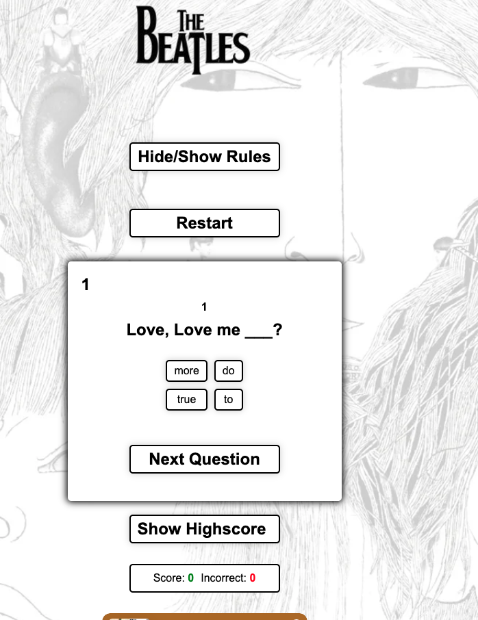
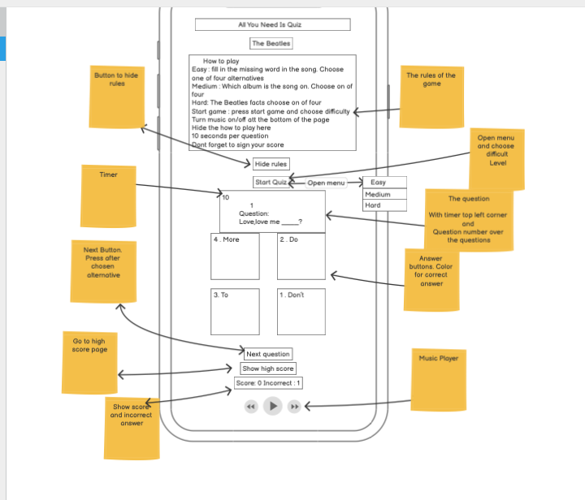

GitHub Repository
You can view the code for this project on my GitHub repository.
Project Explanation
This project demonstrates my skills in HTML, CSS, and JavaScript. Below is an explanation of how I created the project and the code involved.
Design Process
I began the project by planning the design using wireframes created in Balsamiq. This initial step helped me to visualize the layout and structure of the web page before writing any code. Wireframes allowed me to organize content and plan the user interface effectively.
Development Process
To guide me through the project, I followed a YouTube tutorial that provided a basic structure. From there, I enhanced the project by adding several custom features:
- Added a timer functionality to the quiz to enhance user engagement.
- Implemented difficulty levels for the questions, which were not included in the tutorial, to provide a more challenging experience.
- Integrated a highscore feature using various sources, allowing users to save and view their scores.
- Added Spotify integration, enabling users to listen to Beatles music while taking the quiz for a more enjoyable experience.
Code Explanation
First I I structured the HTML to create the basic layout of the webpage using semantic elements like header, div, and footer. This ensures the content is well-organized, accessible, and provides a clear structure for the quiz, including sections for rules, questions, and scores.
Next, I styled the webpage using CSS, focusing on creating a responsive design that looks good on both desktop and mobile devices. I used media queries to adjust the layout for different screen sizes, ensuring a seamless user experience across devices.
Finally, I added interactivity with JavaScript. For example, I implemented a simple form validation and a dynamic content update feature. The JavaScript code ensures the webpage is interactive and provides a good user experience.
Project Details
This project was my second project at Code Institute, where I had the opportunity to demonstrate my understanding of web development concepts. Detailed explanations of the code and additional functionalities are provided in the README file of the repository.